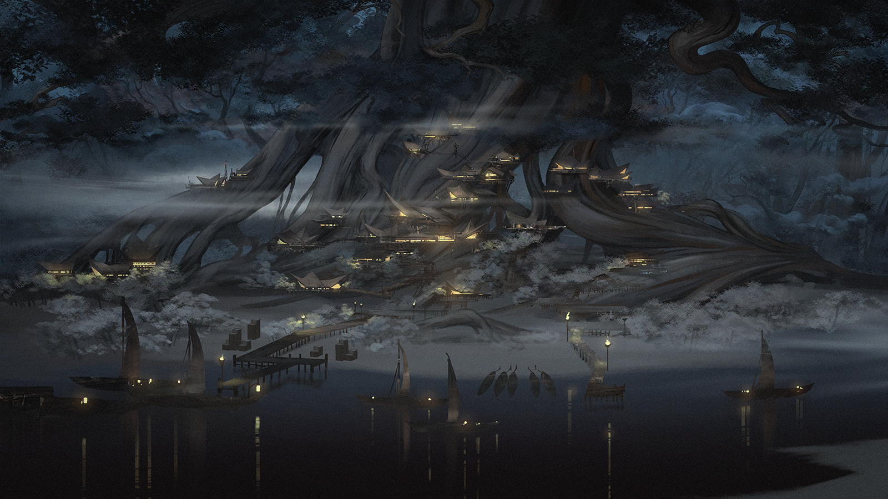
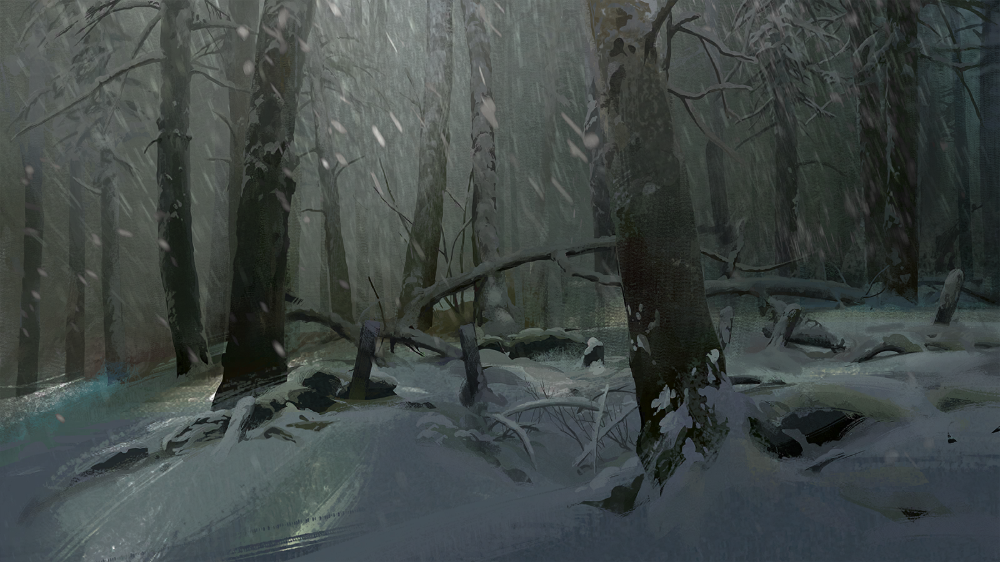
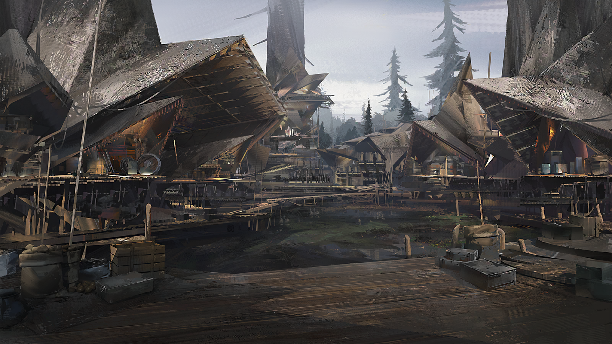
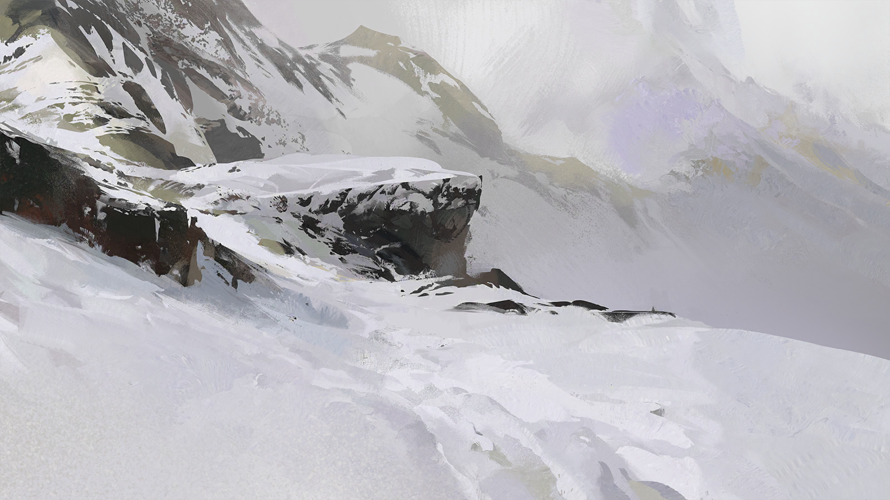
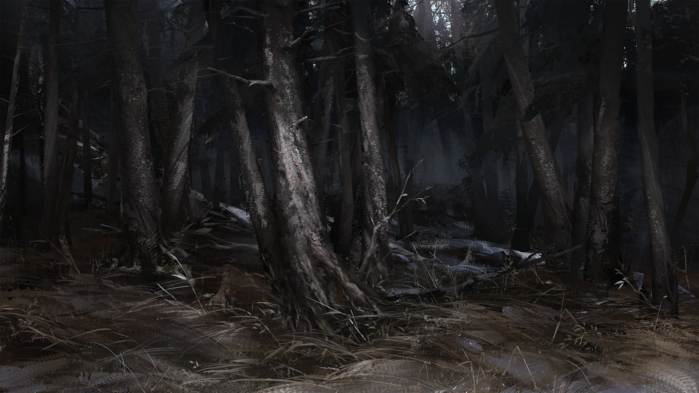

ARCHIVE · RESTRICTED
直播存档《萨米冰原探险》
主播：周符卿 · 时间：1100-12-15 00:00~05:27（信号于 03:25 中断）
LIVE ARCHIVE · REC
SA11001215-325

00:30出发

01:00徒步中

01:30雪景

02:00休息

02:30继续前进

03:00正常

03:25⚠️ 异常
NO SIGNAL
04:00信号丢失
NO SIGNAL
04:30信号丢失
▼ 技术说明
直播信号于 03:25 突然中断，后续画面完全丢失。 存档由756号信号放大站中继，画面经多段修复后仍存在严重损坏。
⚠️ 03:25 截图严重损坏
点击查看关键帧分析……（页面链接丢失）